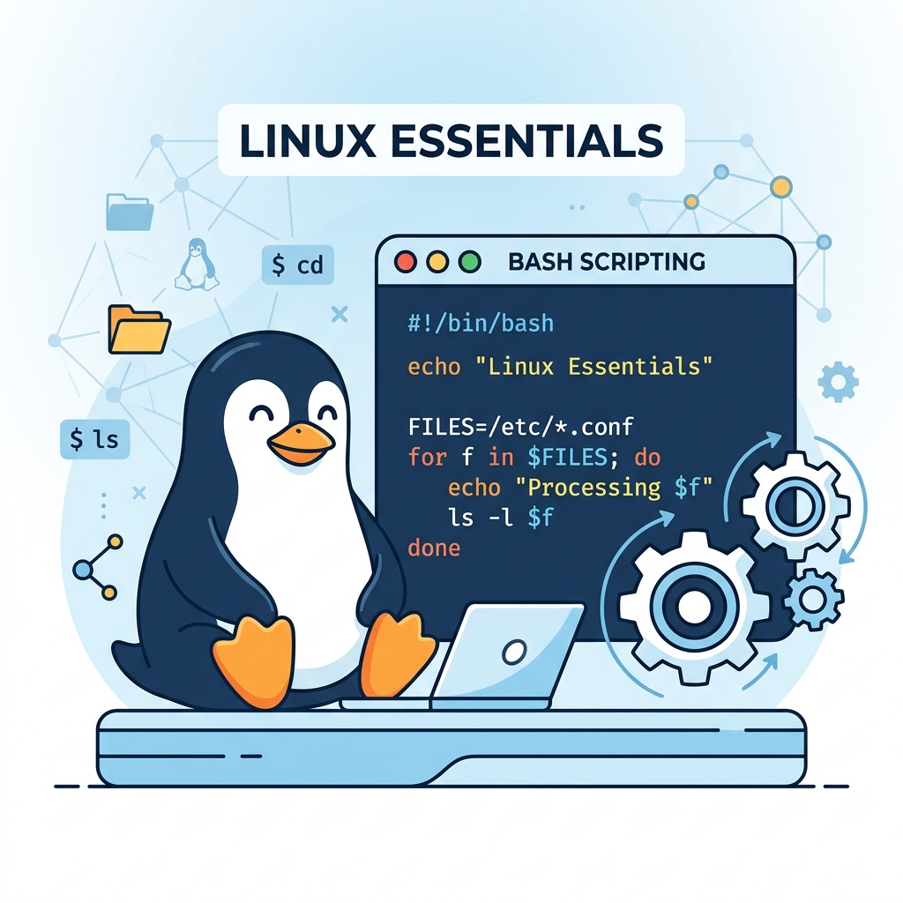

Linux Essentials
Prenez sereinement les commandes du système d'exploitation le plus utilisé sur les serveurs d'entreprise et l'infrastructure Cloud. Devenez autonome sur la CLI Linux, configurez la sécurité et automatisez avec des scripts Bash.

Description Générale
La formation Linux Essentials vous montre comment comprendre le fonctionnement de l'Open Source, des distributions d'exploitation majeures (Ubuntu, Debian, CentOS/RedHat) et de la fameuse ligne de commande. Vous aborderez d'abord l'arborescence des répertoires, les commandes standards de recherche et d'affichage, puis vous avancerez sur des notions d'administration clés : la gestion fine des permissions (chmod, chown), le contrôle des processus, l'installation de paquetages logiciels, la configuration des cartes réseaux virtuelles, et l'écriture de scripts shell d'automatisation d'administration Linux.
Compétences Acquises
Plan de Cours
Informations Générales
Profil Idéal / Prérequis
Toute personne désireuse de travailler dans les architectures Cloud, l'administration système locale, la cyber-sécurité ou le DevOps. Une connaissance basique de l'utilisation d'un pc au quotidien suffit amplement pour débuter.